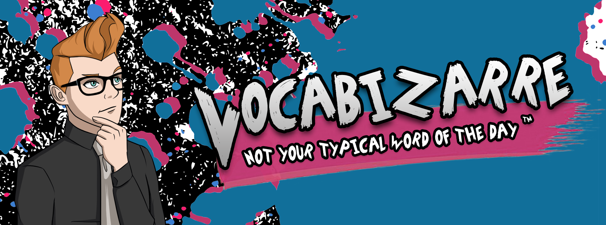

Social learning & visual design
Vocabizarre
A daily series celebrating French words that are wonderfully weird, tricky to pronounce, or simply not typical textbook fodder.

The idea
Move beyond clip-art clichés and predictable vocabulary by giving unusual language an equally distinctive visual identity.
The practice
The project blended microlearning, illustration, typography, social publishing, and the challenge of making one memorable idea each day.